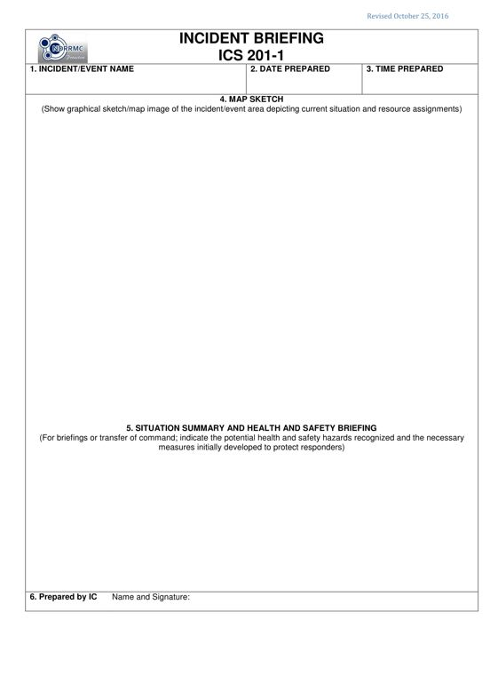
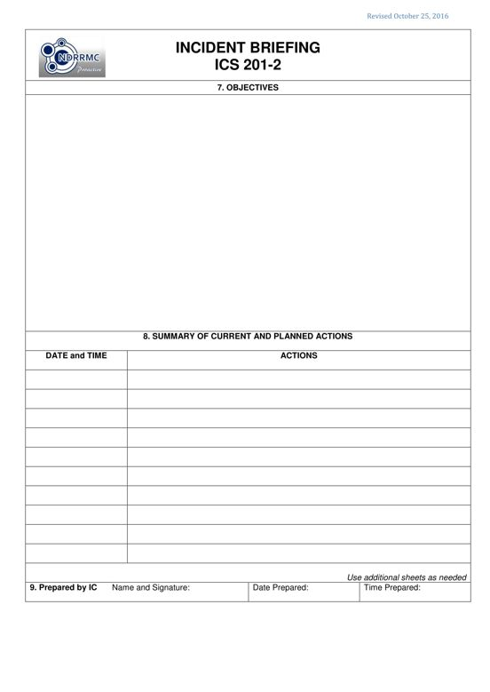
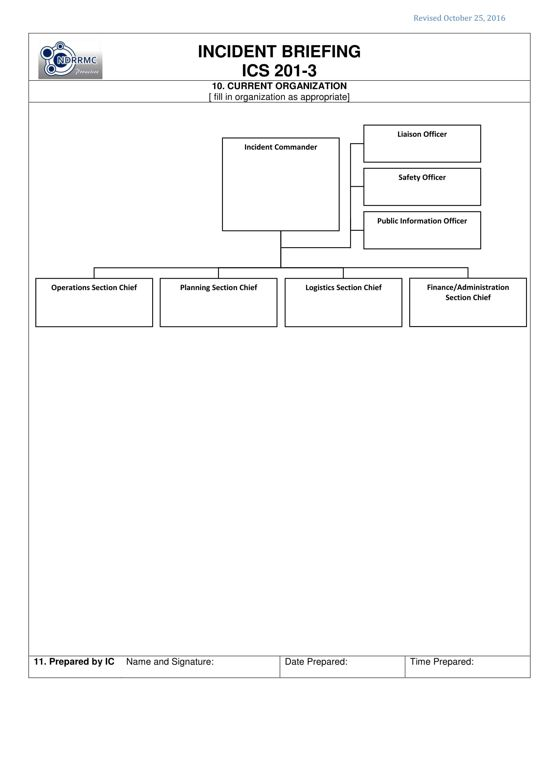
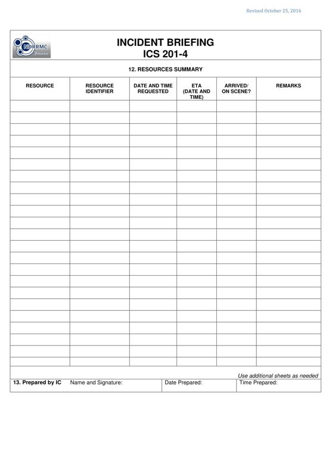

PURPOSE: The ICS 201 provides the Incident Commander (and the Command and General Staffs assuming command of the incident) with basic information regarding the incident / event situation and the resources allocated. It also serves as an initial action workshop and as a permanent record of the initial response.
PREPARATION: The ICS 201 is prepared by the Incident Commander (IC) for presentation to the incoming IC, the Responsible Official, or other officials as appropriate.
DISTRIBUTION: The ICS 201 is duplicated and distributed before the initial briefing of the Command and General Staffs or other responders as appropriate. Pages 1 – 2 are usually given to the Situation Unit while pages 3 – 4 are given to the Resource Unit.




| BLOCK NO. | BLOCK TITLE | INSTRUCTIONS |
| 1 | Incident / Event Name | Enter the name assigned to the incident / event. |
| 2 | Date Prepared | Enter the date (mm-dd-yyyy) the form was prepared. |
| 3 | Time Prepared | Enter the time (24 hour format) the form was prepared. |
| 4 | Map Sketch | Show perimeter and other graphical information depicting current situational status, resource assignments, location of facilities and other special information on a map/ sketch (or using an attached map). Utilize the commonly accepted ICS map symbology.If geospatial reference points are needed about the incident’s/event‘s location or area outside the ICS organization, that information must be submitted on the Incident Status Summary (ICS 209). |
| 5 | Situation Summary and Health and Safety Hazards | Briefly enter the summary of the incident or event; recommend to use “4Ws and 1H” as format in bulleted form. Indicate the potential health and safety hazards recognized and the necessary measures initially developed to protect responders. |
| 6 | Prepared by IC | Enter the complete name and signature of the initial IC who prepared the page of the form. |
| 7 | Objectives | Enter the objectives for the incident / event. |
| 8 | Summary of Current and Planned Actions | Enter the current and planned actions, strategies and tactics, forward steps in relation to the objectives. Also specify the date (mm-dd-yyyy), and time (24 hour format) the action will be applied. If additional pages are required, use a blank sheet or another ICS 201 p2. |
| 9 | Prepared by IC | Enter the complete name and signature of the IC who prepared the form. Also enter the date (mm-dd-yyyy), and time (24 hour format) the form was prepared and completed. |
| 10 | Current Organization | Enter on the organizational chart the names assigned to each position. Modify the chart as necessary and add any lines,/ spaces needed for Command Staff Assistants, Agency Representatives and the organization of each of the General Staff Sections. |
| 11 | Prepared by IC | Enter the complete name and signature of the IC who prepared the page of form. Also enter the date (mm-dd-yyyy), and time (24 hour format) the form was prepared and completed. |
| 12 | Resource Summary | Enter the following information about the resources allocated to the incident. If additional pages are needed, use a blank or another 201 page 4 and adjust the page number accordingly |
| Resource | Enter the description of the resource. You may also indicate if the resource is a single resource, strike team or task force. |
|
| Resource Identifier | Enter the resource identifier. This is a unique way to identify or designate a resource. |
|
| Date and Time Requested | Fill this up only for requested resources. |
|
Enter the date (mm-dd-yyyy) and time (24 hour format) the resource has been formally requested and coordinated through the Emergency Operations Center (EOC) |
||
| ETA (Date and Time) | Fill this up only for requested resources. Enter the estimated date (mm-dd-yyyy) and time (24 hour format) of arrival of the resource requested from the EOC. |
|
| Arrived / On-Scene? | Check if the resource has already arrived/ checked-in and is on-scene. |
|
| Remarks | Enter other details such as present location and functional status (specify) of each of the resources assigned |
|
| 13 | Prepared by IC | Enter the complete name and signature of the IC who prepared the page of form. Also enter the date (mm-dd-yyyy), and time (24 hour format) the form was prepared and completed. |